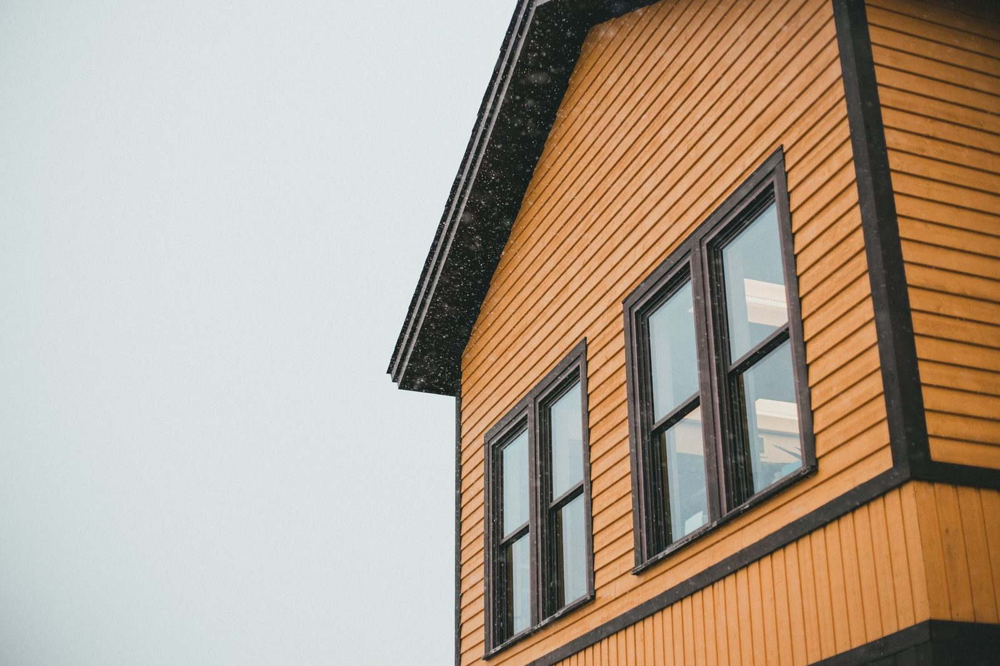
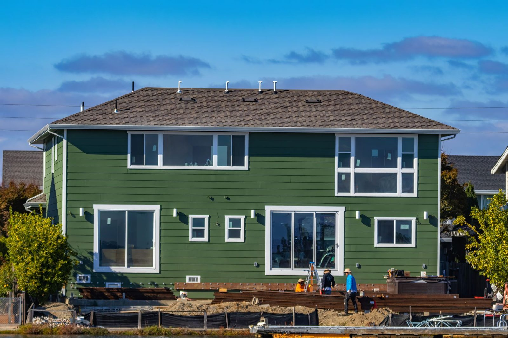
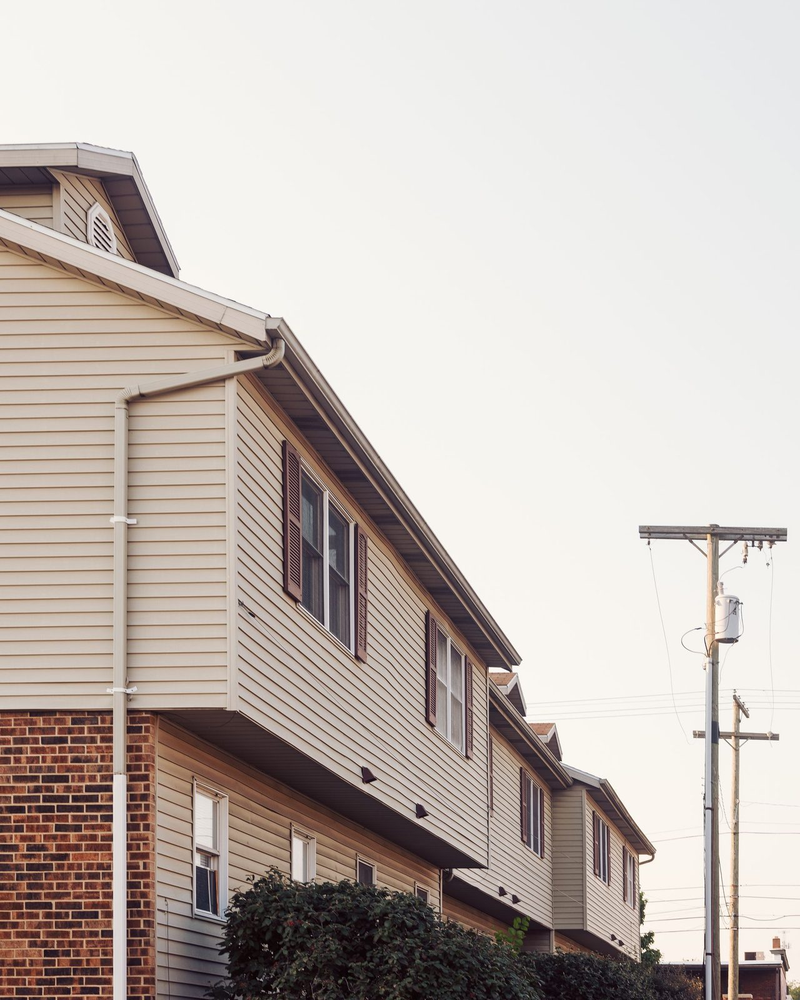
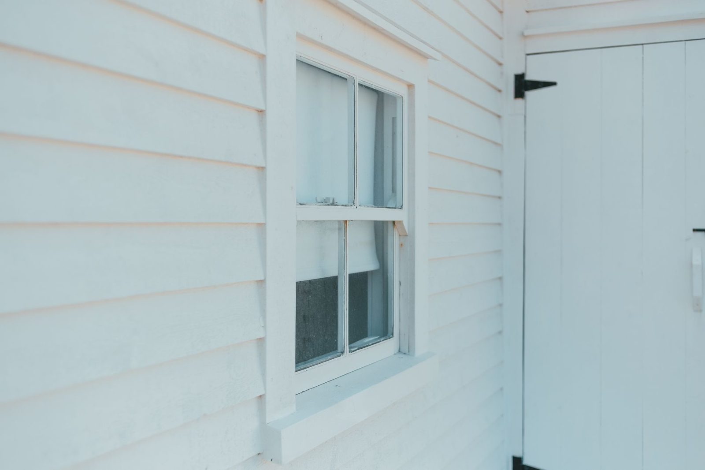

Siding Installation
New builds and full re-clads in vinyl, fiber-cement, cedar, and engineered lap — straight courses, crisp corners, properly flashed.
Popov Construction installs, repairs, and replaces siding and wall finishes across Evansville and the Tri-State. Twenty years of clean lines, tight seams, and a crew that treats your home like its own.

Whether it's a full re-clad or a single damaged course, the work is measured twice, sealed properly, and finished clean. No subcontracted shortcuts.
New builds and full re-clads in vinyl, fiber-cement, cedar, and engineered lap — straight courses, crisp corners, properly flashed.
Storm damage, rot, cracked or loose boards — matched, replaced, and sealed so the fix disappears into the wall.
Tired, fading exterior swapped for a modern, low-maintenance skin — with the moisture barrier and trim done right underneath.
Interior and exterior wall finishes installed fresh or replaced — smooth, textured, or specialty, built to last.
Cracks, gouges, and worn finishes patched and re-blended so the repair is invisible once it's painted.
Two decades of plaster and stucco craft — the same trained hands behind every wall finish we hang.
Tap a finish to see the texture and where it shines. Not sure which is right for your home? That's exactly the conversation to have on a free walkthrough.
The most-requested look in the Tri-State — clean horizontal courses that read crisp from the curb and shrug off Indiana weather. Available in vinyl, fiber-cement, and engineered wood.
Popov Construction has been a family name on Evansville exteriors since 2004 — long enough to know how Indiana freeze-thaw, summer storms, and humidity test a wall. We build for that, not just for the photo.
Accredited with the Better Business Bureau since 2009, with a clean complaint record.
Homeowners rate Popov Construction 5.0 out of 5 on Google — earned one careful job at a time.
7:00 AM to 7:00 PM, every day — because storm damage doesn't wait for Monday.



Representative siding & wall-finish work. Ask us for project references in your neighborhood.
A perfect 5.0 on Google and an A+ from the BBB — earned the only way it counts, one Evansville home at a time.
Tell us what's going on with your exterior and we'll set up a free, no-pressure walkthrough. Most quotes come back within a couple of days.
Twenty years of Evansville exteriors, an A+ reputation, and a crew that shows up. Let's talk about yours.